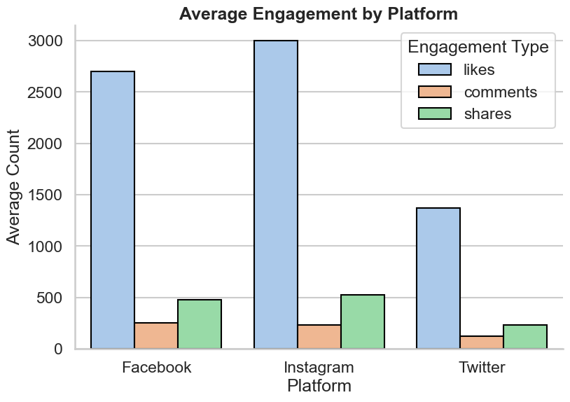
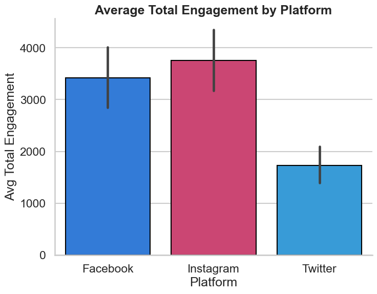
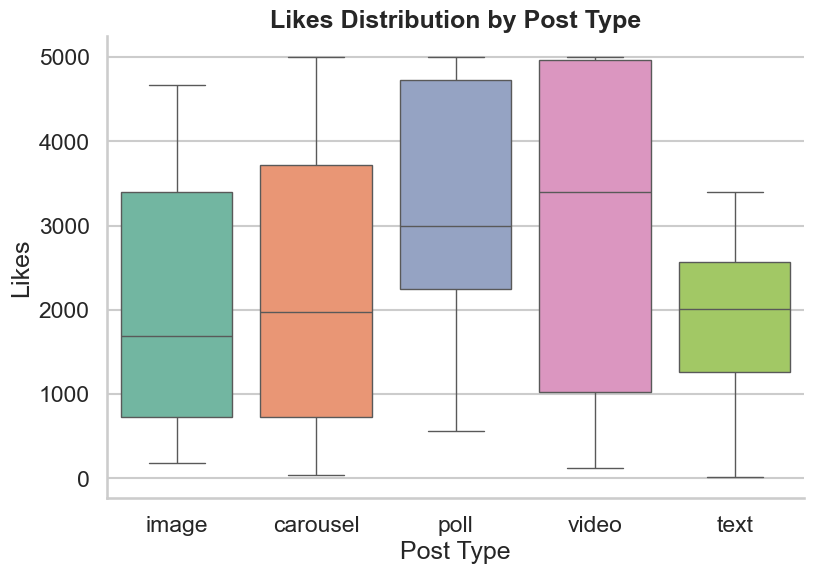
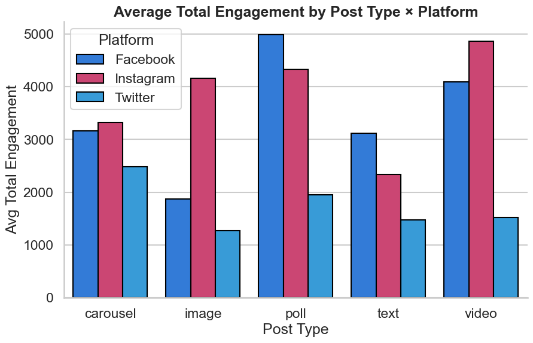
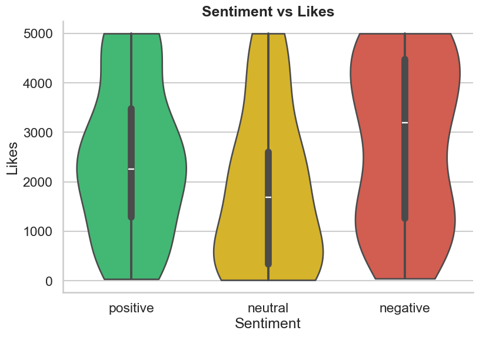
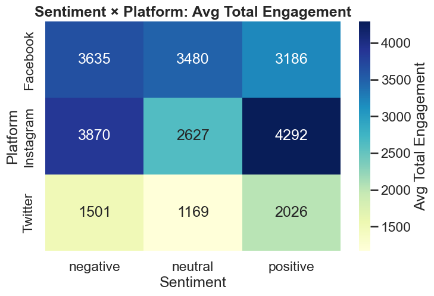
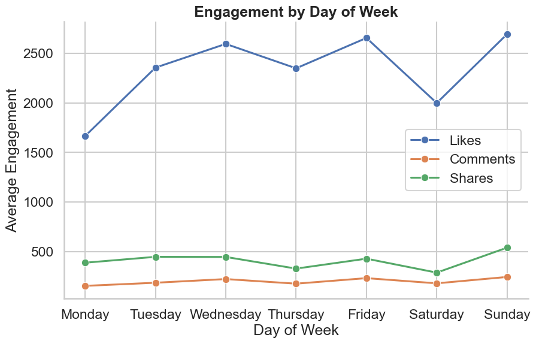

This is a data analysis project based on the
Social Media Engagement Dataset (Kaggle)
.
The dataset captures the pulse of viral trends across Facebook, Instagram, and Twitter.
It reveals how audiences respond to different platforms, post types, sentiments,
and timing by analyzing likes, comments, and shares.
Beyond simple metrics, it enables:
🔍 Trend analysis – finding what makes posts viral
💭 Sentiment modeling – exploring tone vs. engagement
The goal is a clear, interactive, scrollable story with presentation-ready charts you can re-use anywhere,
while also learning how social media behaviors evolve globally 🌍.
Captures hashtags, post types, and engagement across Facebook, Instagram, and Twitter.
💡 Insights
Analyze sentiments, discover what makes content go viral, and explore global behaviors.
🚀 Applications
Perfect for trend analysis, influencer marketing, and presentation-ready visual storytelling.
Analysis
Each panel begins with a brief rationale (why) and an interpretation guide (what it shows).
Click any chart to zoom.
Average Engagement by Platform
Why: Understand strengths by signal instead of collapsing everything into one number.
What it shows: Mean likes, comments, and shares for each platform.
Look for crossover patterns (e.g., one platform may dominate likes while another leads shares). These gaps suggest
different audience behaviors and help tailor KPI expectations by channel.

Average Total Engagement by Platform
Why: A single “impact” score is easier to communicate to stakeholders.
What it shows: Average of likes + comments + shares per platform. Use this as the
headline comparison, then pair it with the previous chart to explain why a platform wins (is it likes-led,
shares-led, etc.).

Engagement Composition by Platform
Why: Composition reveals interaction depth. Comments often indicate deeper conversation, while
likes reflect quick approval and shares extend reach.
What it shows: Proportion of likes/comments/shares for each platform. If a platform skews to
comments, experiment with prompts and CTAs that invite replies; if it skews to shares, optimize for virality and
copy hooks.
Likes Distribution by Post Type
Why: We want formats that are reliably good—not just occasionally viral.
What it shows: Distribution of likes across images, videos, polls, and carousels.
Tight boxes and higher medians indicate consistency; long tails suggest volatility (risky but can spike).

Post Type × Platform
Why: The best format depends on the channel’s culture and algorithmic biases.
What it shows: Average total engagement for each (post type, platform) pair.
Use this to assign formats to channels (e.g., “videos on X, carousels on Y”).

Sentiment vs Likes
Why: Tone can shift reaction. Positive content may lift likes; negative may drive attention.
What it shows: Distribution of likes across positive/neutral/negative posts. Compare medians and
distribution width to see if positivity consistently outperforms, or if neutral/negative occasionally spike.

Sentiment × Platform (Heatmap)
Why: Tone effectiveness varies by platform community.
What it shows: Average total engagement for each (platform, sentiment) pair. Identify
where positivity pays off most, and where neutral/edgy tone might still perform.

Engagement by Day of Week
Why: Posting time is a lever you control—optimize it.
What it shows: Average likes, comments, and shares by weekday. Use peaks for weekly scheduling;
consider time-zone effects or event calendars if you extend this analysis.

Monthly Average Total Engagement by Platform
Why: Detect seasonal patterns, campaigns, or algorithm changes.
What it shows: Month-to-month average total engagement for each platform. Peaks indicate moments
worth investigating (creative themes, promotions, external events).
Top 10 Posts by Total Engagement
Why: Concrete examples are gold for creative direction.
What it shows: The highest-performing posts (likes + comments + shares). Use these as starting
points: topic, asset type, copy style, hashtags, and call-to-action.